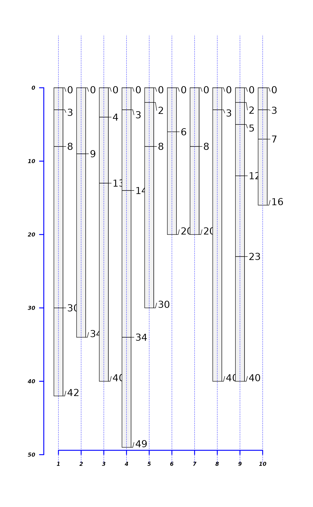
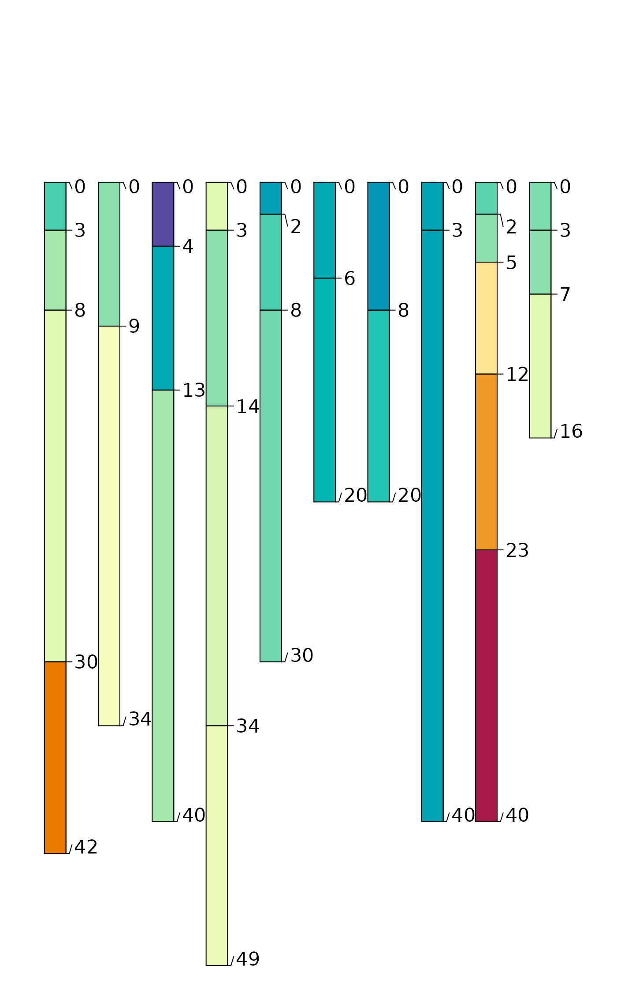
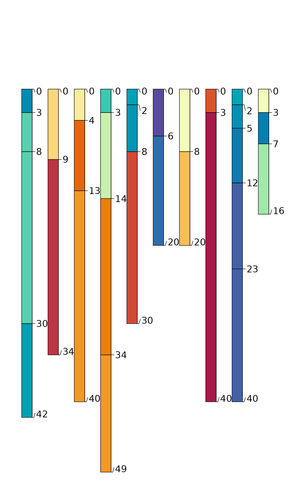
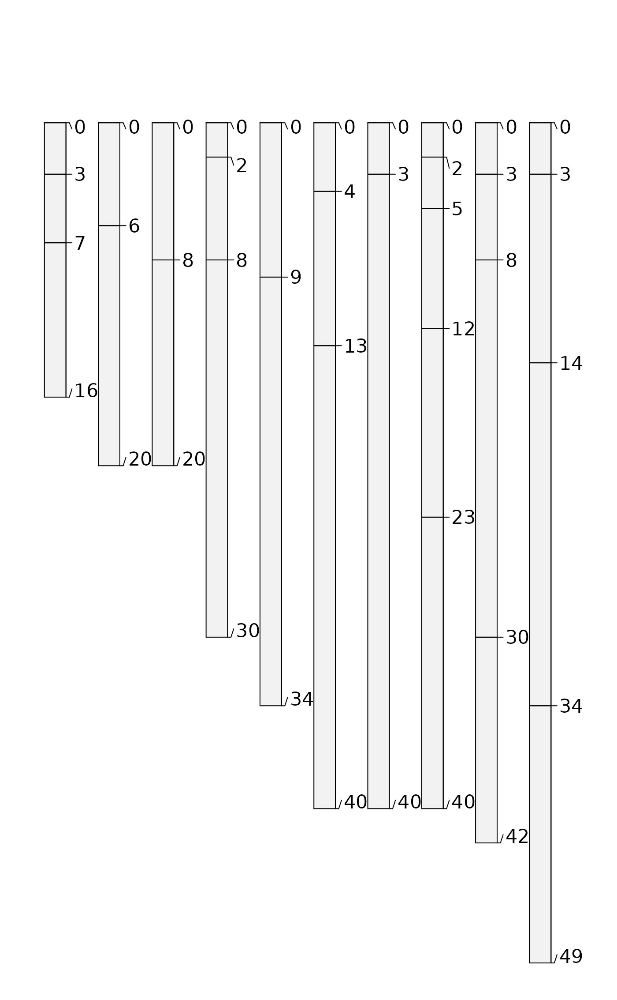

Soil Chemical Data from Serpentinitic Soils of California
A data frame with 30 observations on the following 13 variables.
site name
horizon designation
horizon top boundary in cm
horizon bottom boundary in cm
exchangeable K in c mol/kg
exchangeable Mg in cmol/kg
exchangeable Ca in cmol/kg
cation exchange capacity (NH4OAc at pH 7)
extractable Ca:Mg ratio
sand content by weight percentage
silt content by weight percentage
clay content by weight percentage
>2mm fraction by volume percentage
https://www.soils.org/publications/sssaj/articles/73/6/2087
Selected soil physical and chemical data from (McGahan et al., 2009).
McGahan, D.G., Southard, R.J, Claassen, V.P. 2009. Plant-Available Calcium Varies Widely in Soils on Serpentinite Landscapes. Soil Sci. Soc. Am. J. 73: 2087-2095.
# load sample data set, a simple data.frame object with horizon-level data from 10 profiles
library(aqp)
data(sp4)
str(sp4)
#> 'data.frame': 30 obs. of 13 variables:
#> $ id : chr "colusa" "colusa" "colusa" "colusa" ...
#> $ name : chr "A" "ABt" "Bt1" "Bt2" ...
#> $ top : int 0 3 8 30 0 9 0 4 13 0 ...
#> $ bottom : int 3 8 30 42 9 34 4 13 40 6 ...
#> $ K : num 0.3 0.2 0.1 0.1 0.2 0.3 0.2 0.6 0.8 0.4 ...
#> $ Mg : num 25.7 23.7 23.2 44.3 21.9 18.9 12.1 12.1 17.7 16.4 ...
#> $ Ca : num 9 5.6 1.9 0.3 4.4 4.5 1.4 7 4.4 24.1 ...
#> $ CEC_7 : num 23 21.4 23.7 43 18.8 27.5 23.7 18 20 31.1 ...
#> $ ex_Ca_to_Mg: num 0.35 0.23 0.08 0.01 0.2 0.2 0.58 0.51 0.25 1.47 ...
#> $ sand : int 46 42 40 27 54 49 43 36 27 43 ...
#> $ silt : int 33 31 28 18 20 18 55 49 45 42 ...
#> $ clay : int 21 27 32 55 25 34 3 15 27 15 ...
#> $ CF : num 0.12 0.27 0.27 0.16 0.55 0.84 0.5 0.75 0.67 0.02 ...
sp4$idbak <- sp4$id
#sp4 <- sp4[order(match(sp4$id, aqp:::.coalesce.idx(sort(sp4$id))), sp4$top),]
# upgrade to SoilProfileCollection
# 'id' is the name of the column containing the profile ID
# 'top' is the name of the column containing horizon upper boundaries
# 'bottom' is the name of the column containing horizon lower boundaries
depths(sp4) <- id ~ top + bottom
# check it out
class(sp4) # class name
#> [1] "SoilProfileCollection"
#> attr(,"package")
#> [1] "aqp"
str(sp4) # internal structure
#> Formal class 'SoilProfileCollection' [package "aqp"] with 9 slots
#> ..@ idcol : chr "id"
#> ..@ hzidcol : chr "hzID"
#> ..@ depthcols : chr [1:2] "top" "bottom"
#> ..@ metadata :List of 7
#> .. ..$ aqp_df_class : chr "data.frame"
#> .. ..$ aqp_group_by : chr ""
#> .. ..$ aqp_hzdesgn : chr ""
#> .. ..$ aqp_hztexcl : chr ""
#> .. ..$ depth_units : chr "cm"
#> .. ..$ stringsAsFactors: logi FALSE
#> .. ..$ original.order : int [1:30] 1 2 3 4 5 6 7 8 9 10 ...
#> ..@ horizons :'data.frame': 30 obs. of 15 variables:
#> .. ..$ id : chr [1:30] "colusa" "colusa" "colusa" "colusa" ...
#> .. ..$ name : chr [1:30] "A" "ABt" "Bt1" "Bt2" ...
#> .. ..$ top : int [1:30] 0 3 8 30 0 9 0 4 13 0 ...
#> .. ..$ bottom : int [1:30] 3 8 30 42 9 34 4 13 40 3 ...
#> .. ..$ K : num [1:30] 0.3 0.2 0.1 0.1 0.2 0.3 0.2 0.6 0.8 0.6 ...
#> .. ..$ Mg : num [1:30] 25.7 23.7 23.2 44.3 21.9 18.9 12.1 12.1 17.7 28.3 ...
#> .. ..$ Ca : num [1:30] 9 5.6 1.9 0.3 4.4 4.5 1.4 7 4.4 5.8 ...
#> .. ..$ CEC_7 : num [1:30] 23 21.4 23.7 43 18.8 27.5 23.7 18 20 29.3 ...
#> .. ..$ ex_Ca_to_Mg: num [1:30] 0.35 0.23 0.08 0.01 0.2 0.2 0.58 0.51 0.25 0.2 ...
#> .. ..$ sand : int [1:30] 46 42 40 27 54 49 43 36 27 42 ...
#> .. ..$ silt : int [1:30] 33 31 28 18 20 18 55 49 45 26 ...
#> .. ..$ clay : int [1:30] 21 27 32 55 25 34 3 15 27 32 ...
#> .. ..$ CF : num [1:30] 0.12 0.27 0.27 0.16 0.55 0.84 0.5 0.75 0.67 0.25 ...
#> .. ..$ idbak : chr [1:30] "colusa" "colusa" "colusa" "colusa" ...
#> .. ..$ hzID : chr [1:30] "1" "2" "3" "4" ...
#> ..@ site :'data.frame': 10 obs. of 1 variable:
#> .. ..$ id: chr [1:10] "colusa" "glenn" "kings" "mariposa" ...
#> ..@ sp :Formal class 'SpatialPoints' [package "sp"] with 3 slots
#> .. .. ..@ coords : num [1, 1] 0
#> .. .. ..@ bbox : logi [1, 1] NA
#> .. .. ..@ proj4string:Formal class 'CRS' [package "sp"] with 1 slot
#> .. .. .. .. ..@ projargs: chr NA
#> ..@ diagnostic :'data.frame': 0 obs. of 0 variables
#> ..@ restrictions:'data.frame': 0 obs. of 0 variables
# check integrity of site:horizon linkage
spc_in_sync(sp4)
#> nSites relativeOrder valid
#> 1 TRUE TRUE TRUE
# check horizon depth logic
checkHzDepthLogic(sp4)
#> id valid depthLogic sameDepth missingDepth overlapOrGap
#> 1 colusa TRUE FALSE FALSE FALSE FALSE
#> 2 glenn TRUE FALSE FALSE FALSE FALSE
#> 3 kings TRUE FALSE FALSE FALSE FALSE
#> 4 mariposa TRUE FALSE FALSE FALSE FALSE
#> 5 mendocino TRUE FALSE FALSE FALSE FALSE
#> 6 napa TRUE FALSE FALSE FALSE FALSE
#> 7 san benito TRUE FALSE FALSE FALSE FALSE
#> 8 shasta TRUE FALSE FALSE FALSE FALSE
#> 9 shasta-trinity TRUE FALSE FALSE FALSE FALSE
#> 10 tehama TRUE FALSE FALSE FALSE FALSE
# inspect object properties
idname(sp4) # self-explanitory
#> [1] "id"
horizonDepths(sp4) # self-explanitory
#> [1] "top" "bottom"
# you can change these:
depth_units(sp4) # defaults to 'cm'
#> [1] "cm"
metadata(sp4) # not much to start with
#> $aqp_df_class
#> [1] "data.frame"
#>
#> $aqp_group_by
#> [1] ""
#>
#> $aqp_hzdesgn
#> [1] ""
#>
#> $aqp_hztexcl
#> [1] ""
#>
#> $depth_units
#> [1] "cm"
#>
#> $stringsAsFactors
#> [1] FALSE
#>
#> $original.order
#> [1] 1 2 3 4 5 6 7 8 9 10 11 12 13 14 15 16 17 18 19 20 21 22 23 24 25
#> [26] 26 27 28 29 30
#>
# alter the depth unit metadata
depth_units(sp4) <- 'inches' # units are really 'cm'
# more generic interface for adjusting metadata
# add attributes to metadata list
metadata(sp4)$describer <- 'DGM'
metadata(sp4)$date <- as.Date('2009-01-01')
metadata(sp4)$citation <- 'McGahan, D.G., Southard, R.J, Claassen, V.P.
2009. Plant-Available Calcium Varies Widely in Soils
on Serpentinite Landscapes. Soil Sci. Soc. Am. J. 73: 2087-2095.'
depth_units(sp4) <- 'cm' # fix depth units, back to 'cm'
# further inspection with common function overloads
length(sp4) # number of profiles in the collection
#> [1] 10
nrow(sp4) # number of horizons in the collection
#> [1] 30
names(sp4) # column names
#> horizons1 horizons2 horizons3 horizons4 horizons5
#> "id" "name" "top" "bottom" "K"
#> horizons6 horizons7 horizons8 horizons9 horizons10
#> "Mg" "Ca" "CEC_7" "ex_Ca_to_Mg" "sand"
#> horizons11 horizons12 horizons13 horizons14 horizons15
#> "silt" "clay" "CF" "idbak" "hzID"
min(sp4) # shallowest profile depth in collection
#> [1] 16
max(sp4) # deepest profile depth in collection
#> [1] 49
# extraction of soil profile components
profile_id(sp4) # vector of profile IDs
#> [1] "colusa" "glenn" "kings" "mariposa"
#> [5] "mendocino" "napa" "san benito" "shasta"
#> [9] "shasta-trinity" "tehama"
horizons(sp4) # horizon data
#> id name top bottom K Mg Ca CEC_7 ex_Ca_to_Mg sand silt
#> 1 colusa A 0 3 0.3 25.7 9.0 23.0 0.35 46 33
#> 2 colusa ABt 3 8 0.2 23.7 5.6 21.4 0.23 42 31
#> 3 colusa Bt1 8 30 0.1 23.2 1.9 23.7 0.08 40 28
#> 4 colusa Bt2 30 42 0.1 44.3 0.3 43.0 0.01 27 18
#> 5 glenn A 0 9 0.2 21.9 4.4 18.8 0.20 54 20
#> 6 glenn Bt 9 34 0.3 18.9 4.5 27.5 0.20 49 18
#> 7 kings A 0 4 0.2 12.1 1.4 23.7 0.58 43 55
#> 8 kings Bt1 4 13 0.6 12.1 7.0 18.0 0.51 36 49
#> 9 kings Bt2 13 40 0.8 17.7 4.4 20.0 0.25 27 45
#> 10 mariposa A 0 3 0.6 28.3 5.8 29.3 0.20 42 26
#> 11 mariposa Bt1 3 14 0.4 33.7 6.2 27.9 0.18 41 34
#> 12 mariposa Bt2 14 34 0.3 44.3 6.2 34.1 0.14 36 33
#> 13 mariposa Bt3 34 49 0.1 78.2 4.4 43.6 0.06 36 31
#> 14 mendocino A 0 2 0.5 12.8 2.2 19.3 0.18 57 30
#> 15 mendocino Bt1 2 8 0.2 27.1 3.4 19.8 0.13 51 28
#> 16 mendocino Bt2 8 30 0.2 30.5 3.7 22.9 0.12 51 26
#> 17 napa A 0 6 0.4 16.4 24.1 31.1 1.47 43 42
#> 18 napa Bt 6 20 0.1 16.2 21.5 27.9 1.32 54 29
#> 19 san benito A 0 8 NA 3.0 0.7 3.1 0.24 80 8
#> 20 san benito Bt 8 20 0.0 0.1 5.6 5.6 0.11 74 7
#> 21 shasta A 0 3 0.3 9.7 3.5 13.2 0.36 37 49
#> 22 shasta Bt 3 40 0.2 10.1 2.0 12.2 0.20 39 46
#> 23 shasta-trinity A1 0 2 0.2 18.8 6.6 23.0 0.35 34 44
#> 24 shasta-trinity A2 2 5 0.2 25.5 4.1 21.5 0.16 33 42
#> 25 shasta-trinity AB 5 12 0.3 29.3 3.5 29.6 0.12 24 36
#> 26 shasta-trinity Bt1 12 23 0.2 30.3 1.5 26.5 0.05 20 29
#> 27 shasta-trinity Bt2 23 40 0.1 64.9 0.8 48.7 0.01 11 22
#> 28 tehama A 0 3 0.4 12.4 16.3 40.2 1.31 57 19
#> 29 tehama Bt1 3 7 0.5 20.2 16.5 32.7 0.82 55 20
#> 30 tehama Bt2 7 16 0.2 27.7 13.7 30.0 0.50 51 17
#> clay CF idbak hzID
#> 1 21 0.12 colusa 1
#> 2 27 0.27 colusa 2
#> 3 32 0.27 colusa 3
#> 4 55 0.16 colusa 4
#> 5 25 0.55 glenn 5
#> 6 34 0.84 glenn 6
#> 7 3 0.50 kings 7
#> 8 15 0.75 kings 8
#> 9 27 0.67 kings 9
#> 10 32 0.25 mariposa 10
#> 11 25 0.38 mariposa 11
#> 12 31 0.71 mariposa 12
#> 13 33 0.67 mariposa 13
#> 14 13 0.16 mendocino 14
#> 15 21 0.14 mendocino 15
#> 16 23 0.80 mendocino 16
#> 17 15 0.02 napa 17
#> 18 17 0.07 napa 18
#> 19 12 0.43 san benito 19
#> 20 19 0.60 san benito 20
#> 21 14 0.78 shasta 21
#> 22 14 0.88 shasta 22
#> 23 22 0.17 shasta-trinity 23
#> 24 25 0.13 shasta-trinity 24
#> 25 40 0.09 shasta-trinity 25
#> 26 51 0.05 shasta-trinity 26
#> 27 67 0.05 shasta-trinity 27
#> 28 24 0.43 tehama 28
#> 29 25 0.10 tehama 29
#> 30 32 0.34 tehama 30
# extraction of specific horizon attributes
sp4$clay # vector of clay content
#> [1] 21 27 32 55 25 34 3 15 27 32 25 31 33 13 21 23 15 17 12 19 14 14 22 25 40
#> [26] 51 67 24 25 32
# subsetting SoilProfileCollection objects
sp4[1, ] # first profile in the collection
#> SoilProfileCollection with 1 profiles and 4 horizons
#> profile ID: id | horizon ID: hzID
#> Depth range: 42 - 42 cm
#>
#> ----- Horizons (4 / 4 rows | 10 / 15 columns) -----
#> id hzID top bottom name K Mg Ca CEC_7 ex_Ca_to_Mg
#> colusa 1 0 3 A 0.3 25.7 9.0 23.0 0.35
#> colusa 2 3 8 ABt 0.2 23.7 5.6 21.4 0.23
#> colusa 3 8 30 Bt1 0.1 23.2 1.9 23.7 0.08
#> colusa 4 30 42 Bt2 0.1 44.3 0.3 43.0 0.01
#>
#> ----- Sites (1 / 1 rows | 1 / 1 columns) -----
#> id
#> colusa
#>
#> Spatial Data:
#> [,1]
#> [1,] NA
#> CRS: NA
sp4[, 1] # first horizon from each profile
#> SoilProfileCollection with 10 profiles and 10 horizons
#> profile ID: id | horizon ID: hzID
#> Depth range: 2 - 9 cm
#>
#> ----- Horizons (6 / 10 rows | 10 / 15 columns) -----
#> id hzID top bottom name K Mg Ca CEC_7 ex_Ca_to_Mg
#> colusa 1 0 3 A 0.3 25.7 9.0 23.0 0.35
#> glenn 5 0 9 A 0.2 21.9 4.4 18.8 0.20
#> kings 7 0 4 A 0.2 12.1 1.4 23.7 0.58
#> mariposa 10 0 3 A 0.6 28.3 5.8 29.3 0.20
#> mendocino 14 0 2 A 0.5 12.8 2.2 19.3 0.18
#> napa 17 0 6 A 0.4 16.4 24.1 31.1 1.47
#> [... more horizons ...]
#>
#> ----- Sites (6 / 10 rows | 1 / 1 columns) -----
#> id
#> colusa
#> glenn
#> kings
#> mariposa
#> mendocino
#> napa
#> [... more sites ...]
#>
#> Spatial Data:
#> [EMPTY]
# basic plot method, highly customizable: see manual page ?plotSPC
plot(sp4)
# inspect plotting area, very simple to overlay graphical elements
abline(v=1:length(sp4), lty=3, col='blue')
# profiles are centered at integers, from 1 to length(obj)
axis(1, line=-1.5, at=1:10, cex.axis=0.75, font=4, col='blue', lwd=2)
# y-axis is based on profile depths
axis(2, line=-1, at=pretty(1:max(sp4)), cex.axis=0.75, font=4, las=1, col='blue', lwd=2)

# symbolize soil properties via color
par(mar=c(0,0,4,0))
plot(sp4, color='clay')

plot(sp4, color='CF')

# apply a function to each profile, returning a single value per profile,
# in the same order as profile_id(sp4)
soil.depths <- profileApply(sp4, max) # recall that max() gives the depth of a soil profile
# check that the order is correct
all.equal(names(soil.depths), profile_id(sp4))
#> [1] TRUE
# a vector of values that is the same length as the number of profiles
# can be stored into site-level data
sp4$depth <- soil.depths
# check: looks good
max(sp4[1, ]) == sp4$depth[1]
#> [1] TRUE
# extract site-level data
site(sp4) # as a data.frame
#> id depth
#> 1 colusa 42
#> 2 glenn 34
#> 3 kings 40
#> 4 mariposa 49
#> 5 mendocino 30
#> 6 napa 20
#> 7 san benito 20
#> 8 shasta 40
#> 9 shasta-trinity 40
#> 10 tehama 16
sp4$depth # specific columns as a vector
#> [1] 42 34 40 49 30 20 20 40 40 16
# use site-level data to alter plotting order
new.order <- order(sp4$depth) # the result is an index of rank
par(mar=c(0,0,0,0))
plot(sp4, plot.order=new.order)

# deconstruct SoilProfileCollection into a data.frame, with horizon+site data
as(sp4, 'data.frame')
#> id name top bottom K Mg Ca CEC_7 ex_Ca_to_Mg sand silt
#> 1 colusa A 0 3 0.3 25.7 9.0 23.0 0.35 46 33
#> 2 colusa ABt 3 8 0.2 23.7 5.6 21.4 0.23 42 31
#> 3 colusa Bt1 8 30 0.1 23.2 1.9 23.7 0.08 40 28
#> 4 colusa Bt2 30 42 0.1 44.3 0.3 43.0 0.01 27 18
#> 5 glenn A 0 9 0.2 21.9 4.4 18.8 0.20 54 20
#> 6 glenn Bt 9 34 0.3 18.9 4.5 27.5 0.20 49 18
#> 7 kings A 0 4 0.2 12.1 1.4 23.7 0.58 43 55
#> 8 kings Bt1 4 13 0.6 12.1 7.0 18.0 0.51 36 49
#> 9 kings Bt2 13 40 0.8 17.7 4.4 20.0 0.25 27 45
#> 10 mariposa A 0 3 0.6 28.3 5.8 29.3 0.20 42 26
#> 11 mariposa Bt1 3 14 0.4 33.7 6.2 27.9 0.18 41 34
#> 12 mariposa Bt2 14 34 0.3 44.3 6.2 34.1 0.14 36 33
#> 13 mariposa Bt3 34 49 0.1 78.2 4.4 43.6 0.06 36 31
#> 14 mendocino A 0 2 0.5 12.8 2.2 19.3 0.18 57 30
#> 15 mendocino Bt1 2 8 0.2 27.1 3.4 19.8 0.13 51 28
#> 16 mendocino Bt2 8 30 0.2 30.5 3.7 22.9 0.12 51 26
#> 17 napa A 0 6 0.4 16.4 24.1 31.1 1.47 43 42
#> 18 napa Bt 6 20 0.1 16.2 21.5 27.9 1.32 54 29
#> 19 san benito A 0 8 NA 3.0 0.7 3.1 0.24 80 8
#> 20 san benito Bt 8 20 0.0 0.1 5.6 5.6 0.11 74 7
#> 21 shasta A 0 3 0.3 9.7 3.5 13.2 0.36 37 49
#> 22 shasta Bt 3 40 0.2 10.1 2.0 12.2 0.20 39 46
#> 23 shasta-trinity A1 0 2 0.2 18.8 6.6 23.0 0.35 34 44
#> 24 shasta-trinity A2 2 5 0.2 25.5 4.1 21.5 0.16 33 42
#> 25 shasta-trinity AB 5 12 0.3 29.3 3.5 29.6 0.12 24 36
#> 26 shasta-trinity Bt1 12 23 0.2 30.3 1.5 26.5 0.05 20 29
#> 27 shasta-trinity Bt2 23 40 0.1 64.9 0.8 48.7 0.01 11 22
#> 28 tehama A 0 3 0.4 12.4 16.3 40.2 1.31 57 19
#> 29 tehama Bt1 3 7 0.5 20.2 16.5 32.7 0.82 55 20
#> 30 tehama Bt2 7 16 0.2 27.7 13.7 30.0 0.50 51 17
#> clay CF idbak hzID depth
#> 1 21 0.12 colusa 1 42
#> 2 27 0.27 colusa 2 42
#> 3 32 0.27 colusa 3 42
#> 4 55 0.16 colusa 4 42
#> 5 25 0.55 glenn 5 34
#> 6 34 0.84 glenn 6 34
#> 7 3 0.50 kings 7 40
#> 8 15 0.75 kings 8 40
#> 9 27 0.67 kings 9 40
#> 10 32 0.25 mariposa 10 49
#> 11 25 0.38 mariposa 11 49
#> 12 31 0.71 mariposa 12 49
#> 13 33 0.67 mariposa 13 49
#> 14 13 0.16 mendocino 14 30
#> 15 21 0.14 mendocino 15 30
#> 16 23 0.80 mendocino 16 30
#> 17 15 0.02 napa 17 20
#> 18 17 0.07 napa 18 20
#> 19 12 0.43 san benito 19 20
#> 20 19 0.60 san benito 20 20
#> 21 14 0.78 shasta 21 40
#> 22 14 0.88 shasta 22 40
#> 23 22 0.17 shasta-trinity 23 40
#> 24 25 0.13 shasta-trinity 24 40
#> 25 40 0.09 shasta-trinity 25 40
#> 26 51 0.05 shasta-trinity 26 40
#> 27 67 0.05 shasta-trinity 27 40
#> 28 24 0.43 tehama 28 16
#> 29 25 0.10 tehama 29 16
#> 30 32 0.34 tehama 30 16